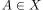
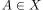
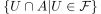
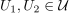
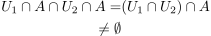

Umgebungsfilter in einer dichten Menge
1. Definition / Satz
Sei  ein topologischer Raum,
ein topologischer Raum,  und
und  der Umgebungsfilter.
Sei ferner  mit
der Umgebungsfilter.
Sei ferner  mit  , dann ist
, dann ist

1
2. Beweis
Nach der Bedingungen einer Basis eines Mengenfilters zeigen wir: Sei , so gilt für

2
 ist und
ist und